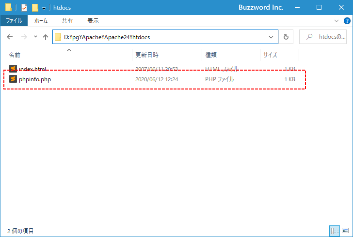
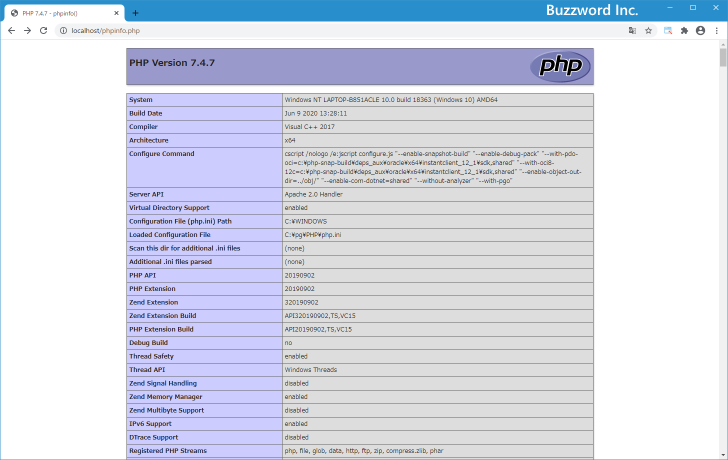
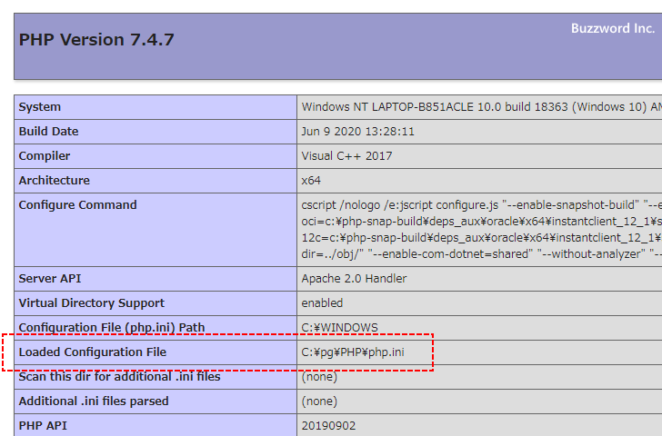

- Home ›
- PHP入門 ›
- PHPインストールと初期設定
phpinfo関数による設定内容の確認
PHP の phpinfo 関数は PHP の設定内容を出力する関数です。「php.ini」ファイルに変更を加えたあとで phpinfo 関数によって出力された値を確認すれば、変更した内容がきちんと反映されているのかどうかを確認することができます。ここでは phpinfo 関数を使って PHP の設定内容を確認する方法について解説します。
phpinfo関数を使って設定内容を出力する
それでは phpinfo 関数を含む簡単な PHP スクリプトを記述したファイルを作成します。テキストエディタを開き下記の内容を記述して下さい。
<?php phpinfo(); ?>
作成したファイルは phpinfo.php というファイル名で Apache のドキュメントルートに設置して下さい。

ブラウザを起動し「http://localhost/phpinfo.php」へアクセスして下さい。次のように PHP の設定内容に関する情報が表示されます。

設定されている内容を確認したい場合にはこのように phpinfo 関数を使って設定内容を出力してみて下さい。ただし外部からアクセス可能な場所に phpinfo 関数を使ったファイルをいつまでの残しておくことはお勧めできません。使用が終わりましたら速やかに削除して下さい。
読み込まれているphp.iniファイルを確認する
現在どの php.ini ファイルを読み込んでいるのかを確認するには「Loaded Configuration File」の値を確認して下さい。

現在読み込まれている php.ini ファイルは「c:¥pg¥PHP¥php.ini」であることが確認できます。
-- --
phpinfo 関数を使って PHP の設定内容を確認する方法について解説しました。
( Written by Tatsuo Ikura )

著者 / TATSUO IKURA
初心者～中級者の方を対象としたプログラミング方法や開発環境の構築の解説を行うサイトの運営を行っています。